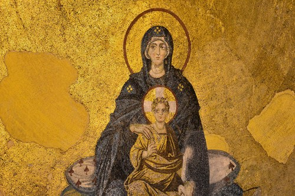
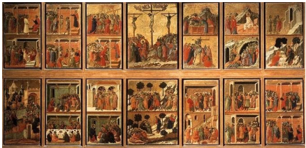
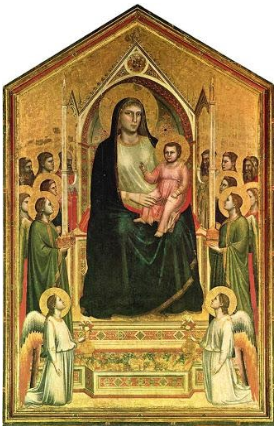
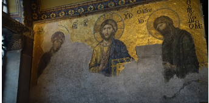

Patitos
Byzantine Art, architecture, paintings, and other visual arts produced in the Middle Ages in the Byzantine Empire (centered at Constantinople) and in various areas that came under its influence. The pictorial and architectural styles that characterized Byzantine art, first codified in the 6th century, persisted with remarkable homogeneity within the empire until its final dissolution with the capture of Constantinople by the Turks in 1453.
Byzantine art is almost entirely concerned with religious expressions and, more specifically, with the impersonal translation of carefully controlled church theology into artistic terms. Its forms of architecture and painting grew out of these concerns and remained uniform and anonymous, perfected within a rigid tradition rather than varied according to personal whim. The result was a sophistication of style and a spirituality of expression rarely paralleled in Western art.
Art produced in the Byzantine Empire (or eastern Roman Empire) at its height, a territory that spanned large swaths of the Mediterranean, present day Turkey, southern Spain, and Italy between 4th and 15th centuries. As the empire’s official religion was Orthodox Christianity, Byzantine art was largely devotional, Christian art. Perhaps the best known example of Byzantine art is a tenth-century mosaic of the Virgin Mary in the High Sophia in Istanbul that demonstrates the stylized forms, sharp contours, flat fields of color, and very recognizable gold mosaic the period is known for.
Byzantine art also flourished in a wide variety of media including glass mosaic, panel and wall painting, metalwork and enamel, and carved relief in ivory and other precious materials. Italian artists and many other artists around Europe started to use Byzantine style in their Frescos and paintings confirming that Byzantine Art was a very important inspiration and learning school thru Europe.
- Giotto Di Bondone, Madonna Enthroned, All Saints Church, Florence.
- Empress Theodora and her retinue, Church of San Vitale, Ravenna, Mosaic.
- Duccio Di Buoninsegna, Life of Jesus, Mosaic, Siena Cathedral, Italy.
- Bonaventura Berlinghieri, Saint Francis Altarpiece, Pescia Italy. 
Penguins
Little sculpture was produced in the Byzantine Empire. The most frequent use of sculpture was in small relief carvings in ivory, used for book covers, reliquary boxes, and similar object. Other miniature arts, embroidery, gold work, and enamel work, flourished in the sophisticated and wealthy society of Constantinople. Manuscript illumination, though it could not approach the impressive effects of monumental painting and mosaic, was important in spreading Byzantine style and iconography through Europe.
- The “Rubens Vase”, ca 400 Walters Art Museum
- Chalice with apostles venerating the cross, Walter Art Museum
- Virgin and child, 7th-8th century, Walter Art Museum
- Triptych Icon of the Virgin and Child, Walter Art Museum
Pinturas
Personally, my favorite thing that the Byzantine Empire introduced to the world was their unique architecture that combined with their artistic style created beautiful architectural concepts and buildings that we still can admire today. The earliest Byzantine Architecture, though determined by the longitudinal basilica church plan developed in Italy, favored the extensive use of large domes and vaults. Circular domes, however, were not structurally or visually suited to a longitudinal arrangement of the walls that supported them; thus, by the 10th century, a radial plan, consisting of four equal vaulted arms proceeding from a dome over their crossing, had been adopted in most areas. This central radial plan was well suited to the hierarchical view of the universe emphasized by the Eastern Church.
- The Dome of the rock from outside and inside, Kipat Hasela, Jerusalem.
- Basilica San Marco from outside and inside, ca 1063-1073, Venice, Italy.
Lo último
Finally, for me, the best representation of the Byzantine Empire is Hagia Sophia, a brilliant architectural structure built as a cathedral at Constantinople under the direction of the emperor Justinian I. It haves the recognizable byzantine architecture which can be seen in the circular domes and the interior it was also planned to be from a Byzantine quincunx church style. The interior it was full of Byzantine mosaics and frescoes most of them with religious purpose, this edification served as a cathedral for centuries until the conquest of Constantinople in 1453, Mehmed II had it repurposed as a Mosque, with the addition of a wooden minaret (on the exterior, a tower used for the summons to prayer), a great chandelier, a mihrab (niche indicating the direction of Mecca), and a minbar (pulpit). We have to thanks the Turkish because not many conquerors leave structures (especially religious structures) untouched, but in the case of High Sophia there were smart enough to leave the structure just as it was and only make changes in the interior. Today it still represents a very beautiful Mosque for the Islam religion that can be found in Turkey.
This represents High Sophia as it now as a Mosque, with Islamic symbolism in the interior and the second images represents how it used to look when it was used as a cathedral before the conquest, also there is a Christian mural that probably was covered or semi-destroy by Turkish following Islam.
Influences from Byzantine architecture, particularly in religious buildings, can be found in diverse regions, from Egypt and Arabia to Russia and Romania. During the Byzantine Renaissance it was when culture and art flourished and artists adopted a naturalistic style and complex techniques from ancient Greek and Roman art, mixing them with Christian themes. Byzantine painting and architecture would have a big influence on the later painters of the Italian Renaissance and all over Europe.